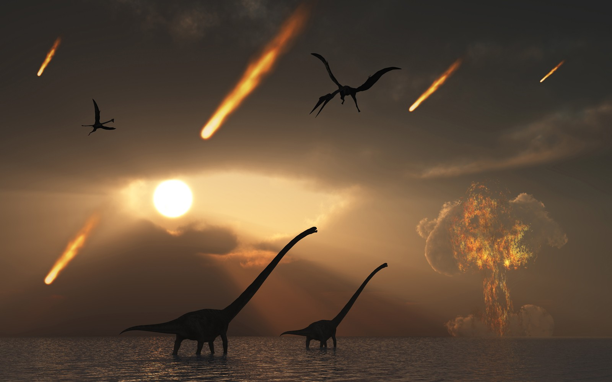

Um estudo publicado na revista científica Nature Communications nesta terça-feira (29) fornece mais
“Nós analisamos as seis famílias mais abundantes de dinossauros durante todo o período Cretáceo, de
Há 76 milhões de anos, porém, houve um ponto de inflexão. “As taxas de extinção aumentaram e, em
Para entender por que isso aconteceu, a equipe utilizou técnicas estatísticas que levaram em
Em todos os resultados obtidos, os pesquisadores encontraram evidências de declínio populacional
anterior

“Isso fez com que os ecossistemas ficassem instáveis e sujeitos ao colapso caso as condições
ambientais se
Também foi possível descobrir que o resfriamento global do clima prejudicou os dinossauros, que
Compreender esse aspecto da história é primordial, afirmam os pesquisadores. Isso porque os
dinossauros
REFERÊNCIAS:https://revistagalileu.globo.com/Ciencia/noticia/2021/06/dinossauros-ja-estavam-em-declinio-antes-de-extincao-por-asteroide.html